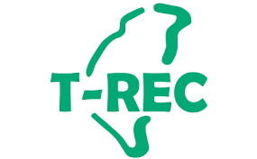

國內再生能源憑證 T-REC
什麼是T-REC？
國內再生能源憑證 (Taiwan Renewable Energy Certificate, T-REC) 是一種用來證明特定數量的電力是來自再生能源（如太陽能、風能等）的電子憑證。這些憑證由政府或認可的機構發行，旨在促進再生能源的發展和使用，並提供企業和個人一個透明、可靠的再生能源採購途徑。
企業和個人可以購買 T-REC 來支持台灣的再生能源發展，這也有助於達成碳中和目標以及提升企業的社會責任形象。T-REC 在台灣能源轉型和可持續發展方面扮演著重要角色。
T-REC 與其他憑證的比較

T-REC 與其他國際再生能源憑證，如 I-REC 和 TIGR，在功能上相似，但它是特別針對台灣市場設計的，並且符合台灣本地的法規和標準。這使得 T-REC 成為那些在台灣運營的企業履行其可持續發展承諾的有效工具。
了解更多